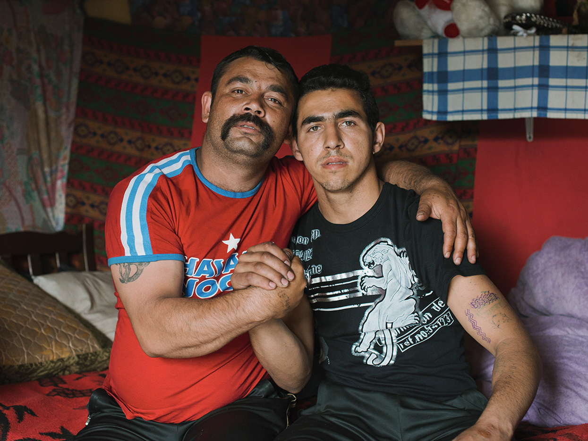
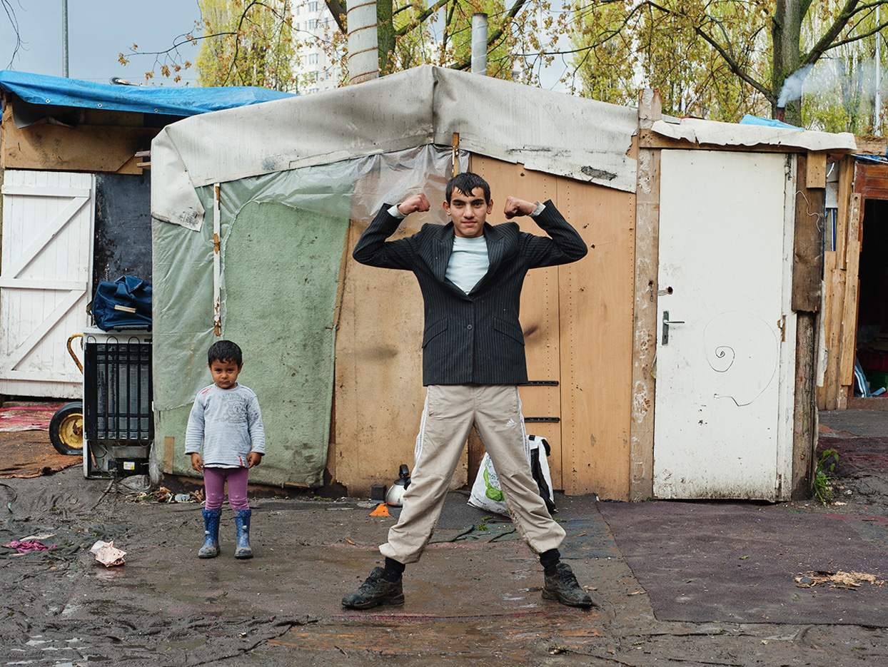

<!DOCTYPE html>
<html class="single-news-nosidebar-wide">
<head>
  <meta charset="UTF-8">
  <meta name="viewport" content="width=device-width, initial-scale=1.0">
  <meta http-equiv="X-UA-Compatible" content="ie=edge">

  <title>Журнал «Нож» &#8212; Оружие интеллектуала</title>

  <link rel="stylesheet" type="text/css" href="https://cdnjs.cloudflare.com/ajax/libs/slick-carousel/1.7.1/slick.min.css"/>
  <link rel="stylesheet" href="https://maxcdn.bootstrapcdn.com/font-awesome/4.7.0/css/font-awesome.min.css">
  <link rel="stylesheet" href="css/app.css" />
</head>
<body>

<header class="header">
    <div class="container header__inner navbar navbar-expand-lg">
      <div class="header__mobile-group">
      <div id="menuBurger" class="burger header__burger" data-toggle="collapse" data-target="#mainNav" aria-controls="mainNav" aria-expanded="false" aria-label="Toggle navigation">
        <div class="burger__stick"></div>
        <div class="burger__stick"></div>
        <div class="burger__stick"></div>
      </div>

      <a href="/" class="logo mx-auto">
        
      </a>

      <a href="#" class="header__search"></a>
    </div>

      <nav class="header__nav collapse navbar-collapse" id="mainNav">
      <ul class="menu sm header__menu" id="mainMenu">
        <li class="menu__item">
          <a class="menu__link" href="#">Россия</a>
          </li>
        <li class="menu__item">
          <a class="menu__link" href="#">Тесты</a>
          </li>
        <li class="menu__item">
          <a class="menu__link" href="#">Секс</a>
          </li>
        <li class="menu__item">
          <a class="menu__link" href="#">Мнения</a>
          </li>
        <li class="menu__item">
          <a class="menu__link" href="#">Stories</a>
          </li>
        <li class="menu__item">
          <a class="menu__link" href="#">Больше ></a>
          <ul class="submenu">
            <li class="submenu__item">
              <a class="submenu__link">Кино</a>
            </li>
            <li class="submenu__item">
              <a class="submenu__link">Музыка</a>
            </li>
            <li class="submenu__item submenu__item_active">
              <a class="submenu__link">Нищегоды</a>
            </li>
            <li class="submenu__item">
              <a class="submenu__link">Еда</a>
            </li>
            <li class="submenu__item">
              <a class="submenu__link">Персонажи</a>
            </li>
            <li class="submenu__item">
              <a class="submenu__link">Неизвестная Россия</a>
            </li>
            <li class="submenu__item">
              <a class="submenu__link">Фотографии</a>
            </li>
            <li class="submenu__item">
              <a class="submenu__link">Личный опыт</a>
            </li>
            <li class="submenu__item">
              <a class="submenu__link">Итервью</a>
            </li>
            <li class="submenu__item">
              <a class="submenu__link">Классика</a>
            </li>
          </ul>
        </li>
      </ul>

      <div class="socials header__socials">
        <ul class="socials__list">
          <li class="socials__item">
            <a href="#" class="socials__link brand-link"><i class="fa fa-facebook socials__fb" aria-hidden="true"></i></a>
          </li>
          <li class="socials__item">
            <a href="#" class="socials__link brand-link"><i class="fa fa-vk socials__vk" aria-hidden="true"></i></a>
          </li>
          <li class="socials__item">
            <a href="#" class="socials__link brand-link"><i class="fa fa-telegram socials__tg" aria-hidden="true"></i></a>
          </li>
          <li class="socials__item">
            <a href="#" class="socials__link brand-link"><i class="fa fa-twitter socials__tw" aria-hidden="true"></i></a>
          </li>
          <li class="socials__item">
            <a href="#" class="socials__link brand-link"><i class="fa fa-search socials__search" aria-hidden="true"></i></a>
          </li>
        </ul>
      </div>
    </nav>
    </div>
  </header>

<div class="site-bg single-news-nosidebar__bg" style="background-image: url('src/assets/imgs/bg-space.jpg');"></div>

<main>
  <div class="featured-news content-container px-sm-0">
    <div class="container featured-news__inner">
      <h2 class="featured-news__heading"><a href="#" class="brand-link">Интервью с победителями международной олимпиады по химии</a></h2>

      

      <a href="#" class="featured-news__arrow-link">
        <svg class="featured-news__arrow" height="27px" width="22.56px" x="0px" y="0px" viewBox="-206.5 -41.3 358 428.3">
          <path class="featured-news__arrow-path" d="M-117.3,296.9l-89.2-89.3v-56.7c0-31.2,0.3-56.7,0.8-56.7s30.5,29.7,66.7,66c37,37,66.8,66,67.7,66
          c1.7,0,1.8-7.2,2-133.7L-69-41.3h42h42l0.3,133.2c0.2,126.1,0.3,133.2,2,133.2c1,0,30.5-28.8,67.2-65.5c36-36,65.8-65.5,66.2-65.5
          c0.4,0,0.8,25.5,0.8,56.7v56.7l-89.2,89.3c-49.1,49.1-89.5,89.3-89.8,89.3S-68.2,346-117.3,296.9z"/>
        </svg>
      </a>
    </div>
  </div>

  <div class="container mt-sm-4">
    <article class="article jsArticle">
      <div class="article__inner">
        <footer class="content-info content-info--wide text-uppercase mb-4 article-content-px">
          <a class="content-info__item" href="#">Агата Коровина</a>
          <span class="content-info__separator">•</span>
          <time class="content-info__item" datetime="">13.07.17</time>
          <span class="content-info__separator">•</span>
          <a href="#" class="content-info__item">Россия</a>
        </footer>

        <h1 class="article__title mb-4 article-content-px"><span class="c-primary">За кустами:</span> Жизнь французских цыган — в репортаже Антуана Брюя</h1>
        <div class="article__lead">
          <p>Антуан Брюй путешествует автостопом по Европе и изучает частную жизнь людей, которые по разным причинам покинули цивилизованный мир, выбрав альтернативный способ существования. Один из таких проектов — серия о жизни табора на севере Франции.</p>
        </div>

        <div class="social-sharing article__social-sharing">
          <span class="article__social-sharing-item">
            <i class="fa fa-2x fa-facebook-official" aria-hidden="true"></i>
            <span>Пошерить</span>
          </span>

          <span class="article__social-sharing-item">
            <i class="fa fa-2x fa-vk" aria-hidden="true"></i>
            <span>Пошерить</span>
          </span>
        </div>

        <div class="article__content">
          <div class="article__full-width jsFullWidthContent">
            
          </div>

          <p>Цыганская культура закрыта от влияния чужаков и благодаря этому интернациональна: это поселение могло находиться где-нибудь под Воронежем или Буэнос-Айресом.</p>

          
          

          <div class="article__full-width jsFullWidthContent">
            
          </div>

          <div class="article__full-width jsFullWidthContent">
            
          </div>
        </div>

        <div class="article__block mb-4">
          <strong class="align-middle text-lg">Поделиться в соцсетях:</strong>
          <div class="social-sharing align-middle"></div>
        </div>

        <div class="article__tags article__block mb-4">
          <ul class="grid grid--words">
            <li class="grid__item"><a class="link link--large" href="#">Омск</a></li>
            <li class="grid__item"><a class="link link--large" href="#">Неизвестная Россия</a></li>
            <li class="grid__item"><a class="link link--large" href="#">Гиды</a></li>
            <li class="grid__item"><a class="link link--large" href="#">Города</a></li>
            <li class="grid__item"><a class="link link--large" href="#">Метро</a></li>
            <li class="grid__item"><a class="link link--large" href="#">Достопримечательности</a></li>
            <li class="grid__item"><a class="link link--large" href="#">Памятники</a></li>
          </ul>
        </div>

        <section class="article__more-articles more-articles">
          <div class="article__block more-articles__item">
            <h2 class="more-articles__title h3 font-weight-normal">Читайте также:</h2>
          </div>

          <div class="article__block more-articles__item">
            <h3 class="h3 more-articles__heading">
              <a href="#" class="brand-link">Поджечь, разгромить, изъять, разбить, уволить: основные методы борьбы со штабами Навального в Омске</a>
            </h3>
          </div>

          <div class="article__block more-articles__item">
            <h3 class="h3 more-articles__heading">
              <a href="#" class="brand-link">«Так будет с каждыми, кто будет предавать эту страну». Видео нападения на омский штаб Навального</a>
            </h3>
          </div>

          <div class="article__block more-articles__item">
            <h3 class="h3 more-articles__heading">
              <a href="#" class="brand-link">«Видимо, уже буква „Н“ и цифра 2018 — это оскорбление нашей власти» <span class="font-weight-normal">Руководители штабов — о прессинге силовиков</span></a>
            </h3>
          </div>

          <div class="article__block more-articles__item">
            <h3 class="h3 more-articles__heading">
              <a href="#" class="brand-link">План «Навальный»: как полиция борется с оппозиционными штабами в Омской области. Карта</a>
            </h3>
          </div>
        </section>
      </div>
    </article>
  </div>
</main>

<footer class="footer mt-3">
  <div class="footer__inner container">
    <div class="row">
      <div class="col-12 col-lg footer__brand">
        <a href="/" class="footer__logo">НОЖ</a>
        <p class="footer__subheading">Интеллектуальный журнал<br>о культуре и обществе</p>
      </div>

      <div class="col-12 col-lg footer__nav">
        <ul class="nav footer__menu flex-column font-weight-bold">
          <li class="nav-item"><a class="footer__nav-link" href="#">О нас</a></li>
          <li class="nav-item"><a class="footer__nav-link" href="#">Реклама</a></li>
          <li class="nav-item"><a class="footer__nav-link" href="#">Вакансии</a></li>
          <li class="nav-item"><a class="footer__nav-link" href="#">Стать частью проекта</a></li>
        </ul>

        <ul class="socials socials--theme-light footer__socials mt-4">
          <li class="socials__item">
            <a href="#" class="socials__link brand-link"><i class="fa fa-facebook socials__fb" aria-hidden="true"></i></a>
          </li>
          <li class="socials__item">
            <a href="#" class="socials__link brand-link"><i class="fa fa-vk socials__vk" aria-hidden="true"></i></a>
          </li>
          <li class="socials__item">
            <a href="#" class="socials__link brand-link"><i class="fa fa-telegram socials__tg" aria-hidden="true"></i></a>
          </li>
          <li class="socials__item">
            <a href="#" class="socials__link brand-link"><i class="fa fa-twitter socials__tw" aria-hidden="true"></i></a>
          </li>
          <li class="socials__item">
            <a href="#" class="socials__link brand-link"><i class="fa fa-search socials__search" aria-hidden="true"></i></a>
          </li>
        </ul>
      </div>

      <div class="col-12 col-lg-5 footer__text">
        <p>Использование всех текстовых материалов без изменений в некоммерческих целях разрешается со ссылкой на «Нож». Все аудиовизуальные произведения являются собственностью своих авторов и правообладателей и используются только в образовательных и информационных целях. Если вы являетесь собственником того или иного произведения и не согласны с его размещением на нашем сайте, пожалуйста, напишите на <a class="footer__link" href="mailto:hi@knife.media">hi@knife.media</a></p>
        <p>Сайт может содержать контент, не предназначенный для лиц младше 18 лет</p>
      </div>
    </div>
  </div>
</footer>

<script src="./node_modules/jquery/dist/jquery.min.js"></script>
<script src="https://getbootstrap.com/assets/js/vendor/popper.min.js"></script>
<script src="./node_modules/bootstrap/dist/js/bootstrap.min.js"></script>
<script src="./node_modules/smartmenus/dist/jquery.smartmenus.min.js"></script>
<script type="text/javascript" src="https://cdnjs.cloudflare.com/ajax/libs/slick-carousel/1.7.1/slick.min.js"></script>
<script src="static/app.js"></script>

<!-- Script for embedding YouTube video -->
<script>
// 2. This code loads the IFrame Player API code asynchronously.
var tag = document.createElement('script')
var $mediaNewsMediaControl = $('#mediaNewsMediaControl')

tag.src = "https://www.youtube.com/iframe_api"
var firstScriptTag = document.getElementsByTagName('script')[0]
firstScriptTag.parentNode.insertBefore(tag, firstScriptTag)

// 3. This function creates an <iframe> (and YouTube player)
//    after the API code downloads.
var player = null

function onYouTubeIframeAPIReady() {
  player = new YT.Player('mediaNewsVideoPlayer', {
    height: '390',
    width: '640',
    videoId: '0JhtnSYOJYI',
    events: {
      'onReady': onPlayerReady,
      'onStateChange': onPlayerStateChange
    }
  })
}

// 4. The API will call this function when the video player is ready.
function onPlayerReady(event) {
  $mediaNewsMediaControl.click(onMediaControlClick)
}

// 5. The API calls this function when the player's state changes.
//    The function indicates that when playing a video (state=1),
//    the player should play for six seconds and then stop.
var done = false
function onPlayerStateChange(event) {
  // if (event.data == YT.PlayerState.PLAYING && !done) {
  //   setTimeout(stopVideo, 6000)
  //   done = true
  // }
}

function stopVideo() {
  player.stopVideo()
}

function onMediaControlClick (event) {
  if (!player) return

  $mediaNewsMediaControl.closest('.media-news').addClass('media-news--in-action')
  player.playVideo()
}
</script>

<script>
var breakpoints = {
  xs: 0,
  sm: 576,
  md: 768,
  lg: 992,
  xl: 1200
}

$(function() {
  var $stories = $('#stories')

  $stories.on('init', slickEventHandler)
  $stories.on('afterChange', slickEventHandler)
  $stories.on('beforeChange', slickEventHandler)
  $stories.on('breakpoint', slickEventHandler)
  $stories.on('destroy', slickEventHandler)
  $stories.on('reInit', slickEventHandler)
  $stories.on('setPosition', slickEventHandler)
  $stories.on('lazyLoaded', slickEventHandler)

  $stories.slick({
    centerMode: true,
    appendArrows: null,
    infinite: true,
    slidesToShow: 3,
    slidesToScroll: 1,
    responsive: [
      {
        breakpoint: breakpoints.lg,
        settings: {
          arrows: false,
          centerMode: false,
          slidesToShow: 2
        }
      },
      {
        breakpoint: breakpoints.sm,
        settings: {
          arrows: false,
          centerMode: true,
          centerPadding: '40px',
          slidesToShow: 1
        }
      }
    ]
  });

  function slickEventHandler (event, slick, direction) {
    if (event.type === 'destroy') {
      removeSlickSlidesHeight(slick)
    } else {
      makeSlickSlidesFitToParentHeight(slick)
    }
  }

  function makeSlickSlidesFitToParentHeight (slick) {
    // Reseting height each slide.
    removeSlickSlidesHeight(slick)

    var containerHeight = slick.$slideTrack.outerHeight()

    getSlickSlides(slick).css('height', containerHeight + 'px');
  }

  function removeSlickSlidesHeight (slick) {
    getSlickSlides(slick).css('height', '')
  }

  function getSlickSlides (slick) {
    return slick.$list.find('.slick-slide')
  }
})

$(function() {
  var $window = $(window)
  var $mainNav = $('#mainNav')
  var $mainMenu = $('#mainMenu')
  var $firstBigModule = $('#firstBigModule')
  var $fullWidthContent = $('.jsFullWidthContent')

  !function init () {
    onWindowResize()
    $window.resize(onWindowResize)
  }()

  function onWindowResize (event) {
    firstBigModuleAdjustCssClasses()
    updateFullWidthContent()
  }

  function updateFullWidthContent () {
    $fullWidthContent.each(function () {
      var $elem = $(this)
      var $article = $elem.closest('.jsArticle')

      if (!$article.length) return

      $elem.css({ marginLeft: 0, marginRight: 0})

      var elemCoords = getCoords($elem)
      var articleCoords = getCoords($article)
      var marginLeft = articleCoords.left - elemCoords.left
      var marginRight = elemCoords.right - articleCoords.right

      $elem.css({ marginLeft: marginLeft, marginRight: marginRight})
    })
  }

  function getCoords ($elem) {
    var rect = $elem[0].getBoundingClientRect()

    return {
      top: rect.top + window.pageYOffset,
      bottom: rect.bottom + window.pageYOffset,
      left: rect.left + window.pageXOffset,
      right: rect.right + window.pageXOffset,
      width: rect.width,
      height: rect.height
    }
  }

  function firstBigModuleAdjustCssClasses () {
    const windowWidth = $window.outerWidth()
    const classes = 'module--full-img module--wide'

    if (windowWidth >= breakpoints.xl) {
      $firstBigModule.addClass(classes)
    } else {
      $firstBigModule.removeClass(classes)
    }
  }

  $mainMenu.smartmenus({
    // subMenusMinWidth: '400px',
    // subMenusMaxWidth: 'none'
  })

  $mainNav.on('show.bs.collapse', function (e) {
    $('#menuBurger').addClass('burger--active')
  })

  $mainNav.on('hide.bs.collapse', function (e) {
    $('#menuBurger').removeClass('burger--active')
  })
})
</script>
</body>
</html>
